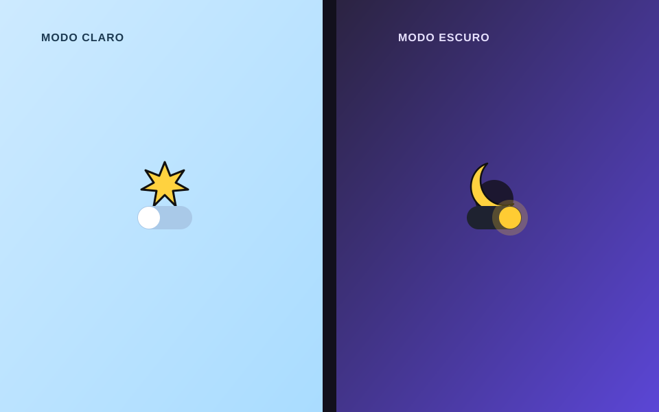

Projeto no GitHub
ModoDark
Interface de exemplo com alternância suave entre tema claro e escuro, salvando a preferência do usuário para a próxima visita.

Sobre o projeto
O ModoDark foi criado para praticar a implementação de temas dinâmicos: um botão alterna entre modo claro e escuro em toda a interface, com transição suave e persistência da escolha via armazenamento local do navegador.
O que foi praticado
Uso de variáveis CSS para tematização, manipulação de classes via JavaScript, armazenamento em localStorage e cuidado com contraste e acessibilidade em ambos os temas.